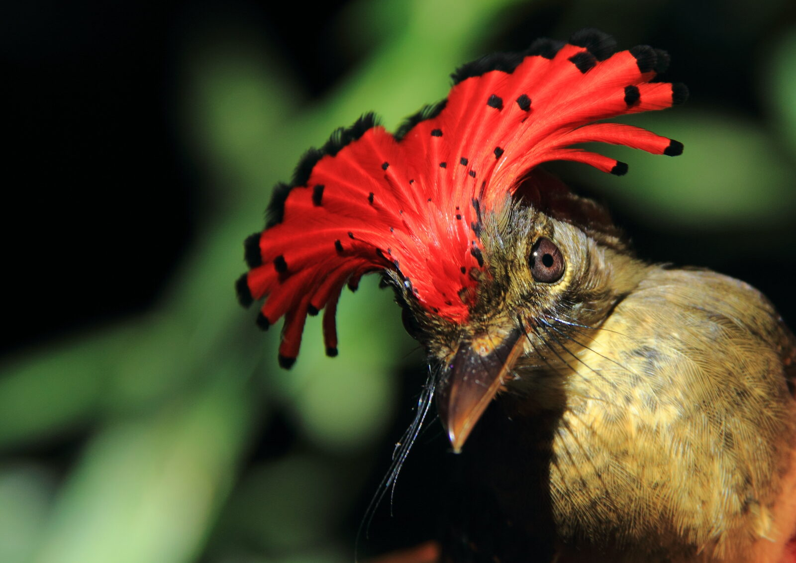
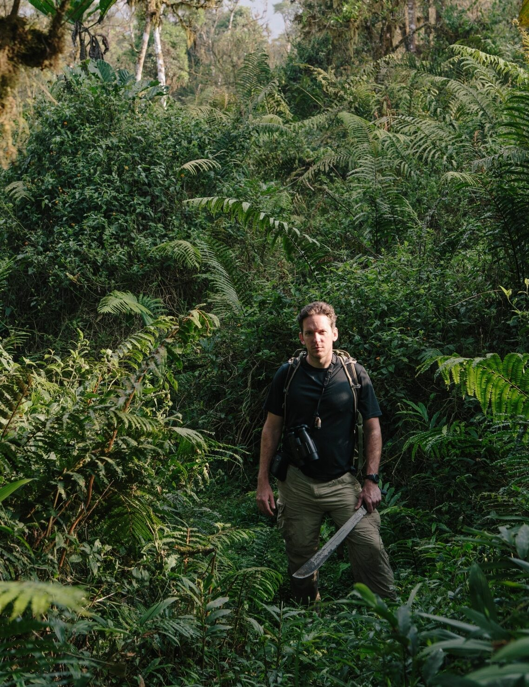
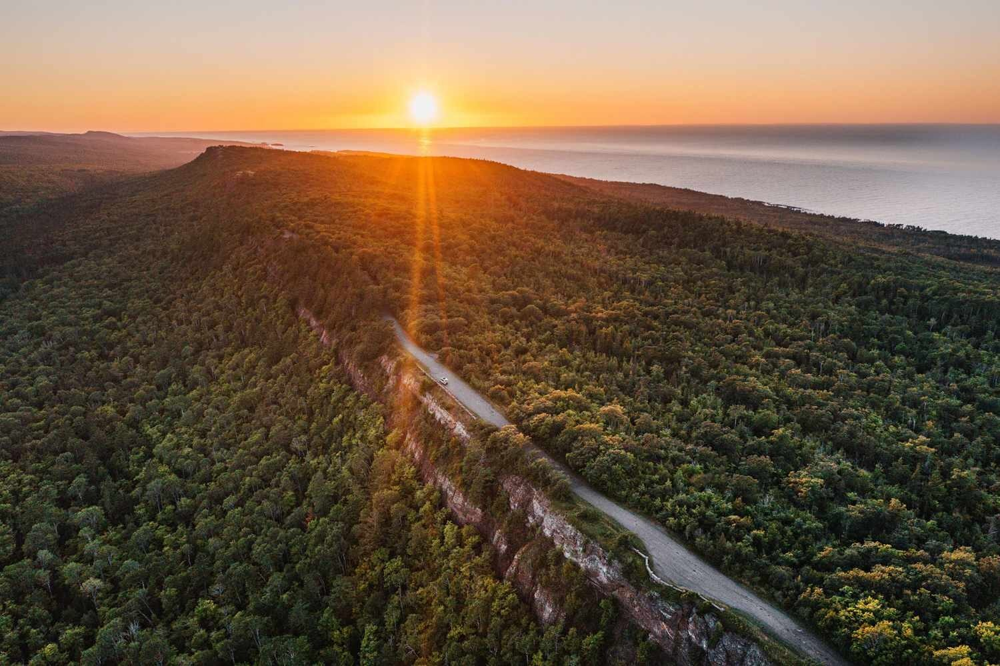
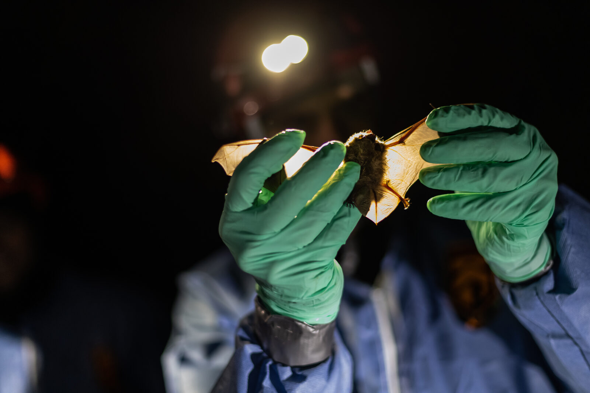
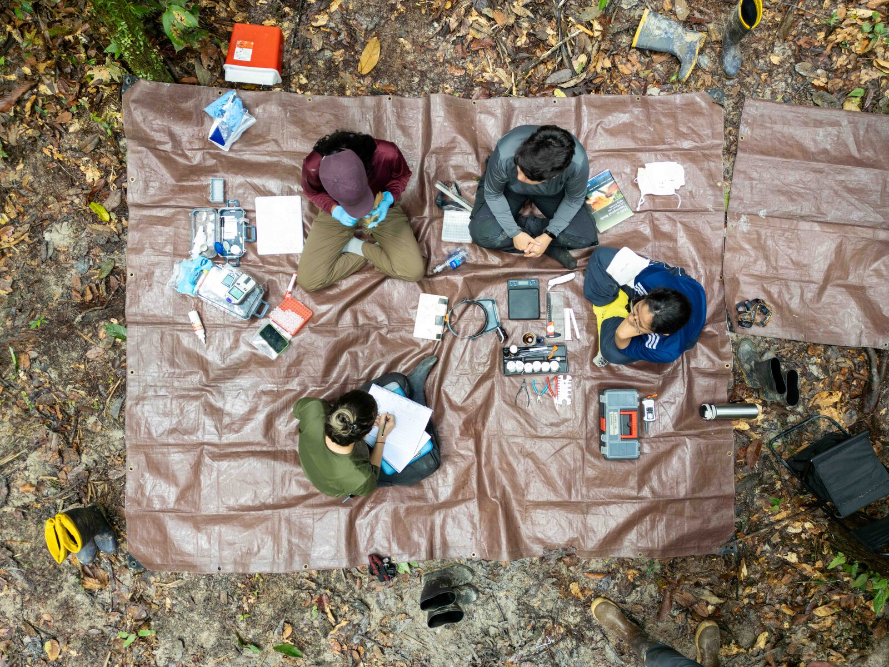

01
Climate & tropical birds
Long-term studies of how warming, drying, and forest change influence the survival and persistence of tropical bird communities.
Field ecology · population dynamics · conservation
We study how climate, land use, disease, and conservation action shape wildlife populations across tropical and temperate landscapes.

Long-term field studies, quantitative ecology, and collaborative conservation across the Americas.
Michigan Technological University
Houghton, Michigan
Research
Our work links individuals to populations and landscapes, combining field data with demographic and spatial models to understand wildlife responses to rapid environmental change.

01
Long-term studies of how warming, drying, and forest change influence the survival and persistence of tropical bird communities.

02
Understanding where migratory birds stop, how they use habitat, and which conservation actions can make migration safer.

03
Research on bats, ticks, and wildlife pathogens that connects field surveillance with practical disease mitigation.

04
Improving the ways we study bird demography, molt, migration, and population change through rigorous field methods.

People & training
We train students in field ecology, quantitative analysis, conservation practice, and scientific communication—while building the sustained partnerships needed to answer difficult ecological questions.